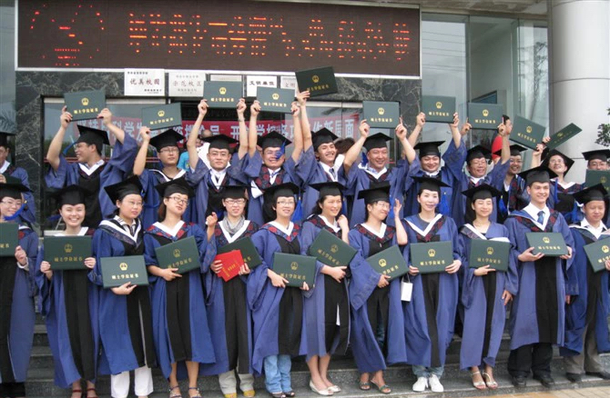

家长必读
孩子几岁该做早期矫正？错过黄金期怎么办？
口呼吸、地包天、龅牙……哪些需要立即干预？哪些可以等等看？燕医生用3000例早矫经验告诉你。
阅读全文 →
南昌长效美学正畸医生 · 省内最早开展隐形矫正的医生之一
遵义大学口腔正畸学硕士 | 江西省正畸专委会委员
南昌市长效美学正畸第一人
20年专注口腔正畸 · 从公立三甲到独立执业
公立三甲医院口腔临床起点，打下扎实的全科基础。
在四川省顶级三甲医院深造，系统学习正畸理论与临床技术。
正畸科班出身，师从正畸领域权威专家，系统掌握各类矫治技术。同期在遵义医科大学第五附属珠海医院积累大量临床病例。
8年连锁口腔机构正畸临床经验，南昌最早开展隐形矫正和金属自锁的医生之一，GS省内完结病例数最高。
创办个人正畸工作室，专注长效美学正畸。20年积累8000+完成案例，含2000-3000例儿童早期矫治。坚持"不过度矫正、不制造焦虑"的临床理念。
资质可查 · 20年口碑可验
全省正畸领域的官方学术组织
民营口腔行业标准制定参与者
国内隐形矫治颌位重建技术官方认证
隐形矫正品牌GS江西省内完成案例最多
真实案例 · 8000+经验的沉淀
面诊时没来得及问的，这里都有
长效美学正畸 · 不只是把牙齿排齐
南昌最早开展隐形矫正的医生之一。根据患者牙齿情况和美学需求选择最合适的品牌，不绑定单一产品。
2000-3000例儿童早矫经验。不只矫正牙齿排列，更关注口呼吸、舌位、吞咽等肌功能问题——从根源上解决牙齿不齐的成因，降低复发率。
南昌最早开展金属自锁的医生之一。相比传统托槽，自锁系统摩擦力更小、复诊间隔更长、整体疗程更短。
正雅官方认证。针对下颌后缩、开颌等颌位异常，通过隐形矫治器配合颌位重建技术，改善侧貌和咬合功能。
50%的初诊患者存在牙周问题。先控制牙周炎症再开始矫正，是燕玲医生坚持的临床原则。健康的牙龈是持久美学效果的基础。
面诊完全免费（0元）。包含：CBCT三维影像拍片、口内数字化扫描、燕玲院长1对1面诊分析和方案讲解。如需纸质详细方案可带走，69元/份。不强行推销，客观告知您的牙齿情况是否适合矫正以及不同方案的利弊。
三个关键词：长效、美学、不反弹。不只是把牙排齐，还关注微笑线、唇部支撑、下颌位置和侧貌改善。同时重视矫正前的牙周评估和矫正后的稳定保持，降低复发率。
能。燕医生8000+案例中成人占比约60%。成年人矫正的关键是牙周健康和矫正力控制——这正是燕医生的专长领域。面诊拍CBCT评估后会给您明确方案。
建议6-8岁首次正畸评估。如果发现口呼吸、地包天、严重龅牙等问题，早期干预效果最好。燕医生有2000-3000例儿童早矫经验，会根据孩子情况判断是立即干预还是观察等待。详细了解 →
了解正畸知识，做出明智选择
口呼吸、地包天、龅牙……哪些需要立即干预？哪些可以等等看？燕医生用3000例早矫经验告诉你。
阅读全文 →三种主流矫正方式全方位对比，从美观度、舒适度、疗程、费用出发，找到最适合你的方案。
阅读全文 →矫正不是孩子的专利。燕医生8000+案例中60%是成年人，60岁的患者也有。疼不疼？多久能看见变化？
阅读全文 →反弹不是矫正的失败，是保持的失败。燕医生讲解长效稳定的三个关键：肌功能、牙周、保持器。
阅读全文 →面诊费 ¥0 · 含CBCT + 口扫 + 燕玲院长1对1方案讲解 | 纸质方案 ¥69/份
燕玲医生每一例矫正方案均亲自面诊、亲自设计。面诊时长约15-25分钟，燕医生会当面讲解CBCT影像、口扫数据和矫正方案。如需纸质详细方案带走，69元/份。
南昌市青山湖区
19070977912
周一至周日 9:00 – 18:00
扫码添加预约助手

免费（含检查+拍片+口扫+方案讲解）
证书原件面诊可查验，资质可追溯
燕玲医生团队将通过微信与您沟通
面诊免费（含CBCT+口扫+方案讲解）
南昌市青山湖区